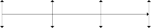
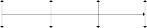

In addition to the matching percentages, we gathered statistics on various variables for various months in our historical sample period. These are provided in Table 16.2. In the data set for December 2003, we have 3036 firms with valid P/E ratios, with an average P/E ratio of 44.69.8 The minimum P/E ratio is 0.001, and the maximum is 5115, which is the P/E ratio of Fisher Scientific International (FSH). The average market capitalization in that month’s data is 3569 million dollars. The largest company is GE, with a market capitalization of 312,000 million dollars, and the smallest company is PGI, Inc. (PGAI), with a market capitalization of 5000 dollars. The average net profit margin of the 4629 companies in the December 2003 data set is —3.57%, with a maximum of 35% for Hawker Resources, Inc. (3HKRRF), and a minimum of —4150% for EnDEVCO, Inc. (3ENDE).
For the computations presented in this and the next chapter, we
chose to use two software programs. For the data management and model estimation, we chose to use STATA. For the portfolio opti- mization, transactions costs and tax management, and leverage and market neutrality, we chose to use MATLAB. STATA is superior in data management, especially when the data are not completely numerical, as is the case in our exercise. MATLAB is superior when matrix algebra is involved.
If a portfolio manager is considering an investment idea to be implemented a number of years down the road, it is possible to do real-time testing rather than backtesting. Real-time testing means applying a new strategy to current data and recording how well the strategy works going forward. This kind of testing, a bit like performing a long-range study, involves years of collecting real- time data. It is therefore quite different from backtesting, which is meant to give a more immediate evaluation of a strategy. As we

8 We exclude companies with negative earnings from the P/E ratio calculations, following the industry convention.
T A B L E 1 6 . 2

Selected Summary Statistics of Historical Data Set
Factor | Period | Nobs | Average | SD | Min | Max |
Price-to-earnings | Dec 1989 | 3016 | 25.773 | 79.818 | 0.414 | 2500.000 |
(P/E) ratio | Dec 1994 | 3735 | 30.347 | 107.848 | 0.279 | 3637.500 |
Dec 1999 | 3454 | 44.251 | 188.304 | 0.008 | 7838.542 | |
Dec 2003 | 3036 | 44.692 | 174.816 | 0.001 | 5115.000 | |
All | 1030677 | 29.026 | 119.119 | 0.001 | 17801.721 | |
Market | Dec 1989 | 4838 | 780.979 | 2987.932 | 0.124 | 62514.250 |
capitalization | Dec 1994 | 6012 | 1000.871 | 3810.607 | 0.067 | 87004.313 |
(SIZE) | Dec 1999 | 6552 | 3488.819 | 19260.914 | 0.025 | 604414.750 |
Dec 2003 | 5421 | 3569.013 | 14950.951 | 0.001 | 311755.469 | |
All | 1609337 | 1274.469 | 8002.380 | 0.000 | 640139.313 | |
Cash ratio | Dec 1989 | 3420 | 1.313 | 5.087 | 0.000 | 103.200 |
(CR) | Dec 1994 | 3919 | 1.707 | 6.624 | 0.000 | 266.625 |
Dec 1999 | 4184 | 1.454 | 4.517 | 0.000 | 109.457 | |
Dec 2003 | 3886 | 1.844 | 6.926 | 0.000 | 297.667 | |
All | 1158828 | 1.522 | 13.250 | 0.000 | 2564.167 | |
Inventory | Dec 1989 | 3051 | 13.914 | 46.279 | 0.019 | 1601.200 |
turnover (IT) | Dec 1994 | 3669 | 14.798 | 96.860 | 0.006 | 5443.176 |
Dec 1999 | 3550 | 19.088 | 59.179 | 0.012 | 1061.778 | |
Dec 2003 | 2422 | 27.669 | 222.506 | 0.004 | 9767.500 | |
All | 1000694 | 15.514 | 80.617 | 0.000 | 10070.800 | |
Net profit | Dec 1989 | 3914 | —1.265 | 42.432 | —2479.000 | 213.971 |
margin | Dec 1994 | 4818 | —1.692 | 73.444 | —4609.364 | 1861.000 |
(NPM) | Dec 1999 | 5038 | —2.795 | 85.026 | —5637.437 | 26.737 |
Dec 2003 | 4629 | —3.571 | 85.086 | —4148.000 | 35.059 | |
All | 1338476 | —1.750 | 65.117 | —9473.000 | 1861.000 | |
Debt-to-equity | Dec 1989 | 3900 | 3.569 | 20.257 | 0.000 | 1049.556 |
(D/E) ratio | Dec 1994 | 4771 | 4.549 | 84.306 | 0.000 | 5721.753 |
Dec 1999 | 4880 | 3.725 | 45.434 | 0.000 | 3114.066 | |
Dec 2003 | 4451 | 24.073 | 1316.321 | 0.000 | 87701.500 | |
All | 1317729 | 3.983 | 243.195 | 0.000 | 87701.500 | |
One-month | Dec 1989 | 4634 | —0.002 | 0.156 | —0.801 | 4.032 |
momentum | Dec 1994 | 5680 | 0.010 | 0.869 | —0.665 | 63.516 |
(M1M) | Dec 1999 | 5934 | 0.104 | 0.446 | —0.800 | 17.364 |
Dec 2003 | 5248 | 0.286 | 16.801 | —0.980 | 1214.686 | |
All | 1583004 | 0.073 | 17.909 | —1.000 | 13123.999 | |
GDP growth | Dec 1989 | 4077 | 0.022 | 0.069 | —0.799 | 1.307 |
exposure | Dec 1994 | 4625 | —0.020 | 0.196 | —2.871 | 12.274 |
(exposure | Dec 1999 | 5134 | 0.026 | 2.632 | —65.191 | 173.853 |
to GDPG) | Dec 2003 | 4979 | 0.063 | 6.531 | —122.828 | 407.611 |
All | 101754 | 0.012 | 2.647 | —122.828 | 658.269 | |
Inflation | Dec 1989 | 4077 | —0.010 | 0.134 | —1.053 | 3.796 |
exposure | Dec 1994 | 4625 | 0.058 | 0.677 | —21.731 | 33.120 |
(exposure | Dec 1999 | 5134 | —0.053 | 2.342 | —144.747 | 35.752 |
to CPIG) | Dec 2003 | 4979 | —0.365 | 35.712 | —2257.276 | 802.666 |
All | 101754 | —0.009 | 15.120 | —2257.276 | 4050.406 | |
Consumer | Dec 1989 | 4077 | 0.001 | 0.006 | —0.058 | 0.088 |
confidence | Dec 1994 | 4625 | —0.000 | 0.006 | —0.172 | 0.233 |
exposure | Dec 1999 | 5134 | 0.001 | 0.191 | —10.742 | 1.767 |
(exposure | Dec 2003 | 4979 | —0.003 | 0.431 | —21.334 | 13.247 |
to CCG) | All | 99289 | 0.001 | 0.239 | —21.334 | 58.016 |
Term premium | Dec 1989 | 4077 | —0.011 | 0.027 | —1.053 | 0.267 |
exposure | Dec 1994 | 4590 | —0.016 | 0.206 | —9.475 | 3.355 |
(exposure to | Dec 1999 | 5097 | 0.006 | 0.813 | —52.030 | 11.630 |
TP3M) | Dec 2003 | 4972 | 0.082 | 3.172 | —129.719 | 112.243 |
All | 89760 | 0.001 | 2.382 | —626.061 | 197.222 | |
Market exposure | Dec 1989 | 4077 | 0.010 | 0.006 | —0.042 | 0.130 |
(exposure | Dec 1994 | 4625 | 0.010 | 0.061 | —3.001 | 2.692 |
to MMF) | Dec 1999 | 5134 | 0.011 | 0.094 | —1.562 | 6.175 |
Dec 2003 | 4979 | 0.017 | 0.986 | —28.823 | 45.008 | |
All | 101754 | 0.010 | 0.274 | —32.568 | 45.008 | |
Standardized | Dec 1989 | 849 | —1.257 | 8.856 | —128.333 | 146.361 |
unanticipated | Dec 1994 | 1173 | —0.006 | 3.435 | —30.000 | 31.500 |
earnings | Dec 1999 | 2110 | 0.021 | 8.108 | —196.500 | 38.000 |
(SUE) | Dec 2003 | 1991 | 0.086 | 10.932 | —305.000 | 56.000 |
All | 272850 | —0.238 | 8.703 | —1003.262 | 653.000 | |
Stock buybacks | Dec 1989 | 3349 | 15.662 | 121.938 | —616.500 | 4052.000 |
(SB) Dec 1994 | 3659 | 10.696 | 182.555 —1800.000 | 9886.000 | ||
Dec 1999 | 3869 | 48.552 | 299.693 —1765.839 | 7515.000 | ||
Dec 2003 | 3691 | 45.532 | 327.961 —3895.975 | 6538.000 | ||
All | 1033525 | 19.660 | 179.536 —5568.000 | 9886.000 | ||
Diversity (DIV) | Dec 1989 | 0 | N.A. | N.A. | N.A. | N.A. |
Dec 1994 | 264 | 0.117 | 1.092 | —2.000 | 4.000 | |
Dec 1999 | 474 | 0.700 | 1.292 | —1.000 | 6.000 | |
Dec 2003 | 2200 | 0.184 | 1.037 | —2.000 | 6.000 | |
All | 71491 | 0.436 | 1.130 | —2.000 | 6.000 | |
Note: These are the cross-sectional statistics for particular time intervals. Nobs stands for the number of observations used to compute the sample statistics, Average is the average value of a factor across all the stocks in the universe at that par- ticular interval, SD is the standard deviation of a factor across all stocks in the universe at that particular interval, and Min and Max represent the greatest and least values of a factor across all stocks in the universe at that particular interval. Detailed descriptions of each factor appear in Appendix 16A. Acronyms are listed in the notation index.
have mentioned, backtesting requires sophisticated commercial databases with cleaned historical data, as well as programming tools.
The backtesting method is flexible to different test structures, and some real-time testing is often appended to it. Typically, a backtest includes three segments of data, as depicted in Figure 16.1. The first two segments cover the time period from T0 , the earliest date for which there are historical data, to T2, the present. These segments encompass all the historical data on stocks, factors, and other variables needed for the evaluation of the investing strategy. The third segment of data covers the time period from T2 to T3, which is some point in the future. The third segment of data there- fore is future data that will be collected on a real-time basis.
The two historical data segments are the in-sample data from T0 to T1 and the out-of-sample data from T1 to time T2. A portfolio manager or analyst usually has several competing models of stock returns and performs sequential tests of them, dropping or adding
a factor in each test. As we discussed in Chapter 2, though, testing and discarding models until one comes across a “significant” one is a form of data mining. Although the original model may have been based on sound economic theory, the final variation may not be. The analyst therefore should limit the sequential testing to the in-sample data, and then, once he or she finds a satisfactory model, test that one on the out-of-sample data. This mitigates the problem of data mining because, since the out-of-sample data are not used to test the many discarded variations of the model, the degrees of freedom are preserved,9 and the test statistics can be interpreted
F I G U R E 1 6 . 1

The backtesting data.

In-sample
In-sample
In-sample
Out-of-sample
Out-of-sample
Out-of-sample
Real time
Real time
Real time
T0 T1
T2 T3
Historical data Future data

9 Degrees of freedom are a measure indicating whether the data set is large enough to run meaningful statistical tests given the number of parameters in the model. The degrees of freedom are preserved because enough unused data points remain.
normally. If the stock-return model performs well on the out-of- sample data, it is a decent indicator that it might work for a real portfolio. Of course, if the model fails on the out-of-sample data, beginning the testing process all over again on the same data will lead to data mining. Everyone in a QEPM research department, manager and analyst alike, needs to be well versed in the correct use of data for backtesting.
Parameter stability, which we discussed in Chapter 2, factors into consideration of the time period of the backtest. If relation- ships between stock returns and factors did not change over time, it would be sufficient to estimate the stock-return model once on the in-sample data and then immediately put it to use in the model. Unfortunately, one of the most frustrating parts of being a port- folio manager is that financial market relationships seem to always change. Many relationships between factors and stock returns change. However, it is the goal of QEPM to find relationships that are stable over time (as stated in tenet 6 of QEPM), and this is accomplished with models with stable parameters. If the parame- ters seem to change over time, the stability of the model can be pre- served by using rolling windows of data. Rather than estimate the parameters or model on one particular in-sample data period, the analyst should create a rolling in-sample window and dynamically reestimate the parameters over time,10 as depicted in Figure 16.2. For example, suppose that an analyst has five years’ worth of data. The in-sample period is January 1980 through January 1981. The out-of-sample period is February 1981 through January of 1985. The rolling in-sample period is one year. The analyst’s first step is to estimate the model’s parameters on the first year of in-sample
F I G U R E 1 6 . 2

Backtesting with rolling in-sample windows. (Note: Each horizontal series of dots represent a rolling sample.)

T0 T1

10 Some people call this walk-forward testing.
data (January 1980 through January 1981), use those parameters to forecast February 1981 returns, and check the model’s performance. The next step is to move forward one month in the in-sample data, reestimate the parameters on the year of data from February 1980 through February 1981, and then use those parameters to forecast March 1981 returns and check the model’s performance. This process is continued through the January 1985 data, the end of the out-of-sample period. The rolling in-sample window therefore ventures into the out-of-sample period, but it does not negate the purpose of the out-of-sample data.
The main difference between this method and the one with a static in-sample period is that the parameters are updated continu- ally to reflect changes in the relationships between factors and stock returns, if there are any. The analyst should be careful to make sure, though, that the reestimations reflect actual changes in the underlying parameters and are not just capturing statistical noise.
For our particular historical backtesting example, we have data from 1976 (T0 = 1976) through 2003 (T2 = 2003). However, since the Global Industry Classification System (GICS) only goes back to 1994, we begin our out-of-sample period with data from 1995. This gives us almost 10 years of out-of-sample data on which to test our quantitative portfolio models. The in-sample period is 1976 through 1994, and the out-of-sample period is 1995 through 2003.
We use a subset of the in-sample period, 1989–1994, to test our factors and to build our stock-return models.11 We also use a dynamic rolling in-sample window to reestimate our stock return model through time up to 2003. We discuss the rolling sample in more detail in Section 16.7 on rebalancing.
We chose a time interval of one month for the data set and obtained end-of-month factors and monthly stock returns to per- form our analysis. As we mentioned in the preceding section, any data available only annually were recorded to one particular month. To deal with data released quarterly, such as gross domes- tic product (GDP), we therefore confronted a choice. One way of handling such data is to fill in three months with the same piece of data. This leads to some biased relationships, because it joins a

11 Although we chose to use only a subset of our in-sample data, we provide the factor tests for other periods in Appendix 16B on the accompanying CD for the curious reader.